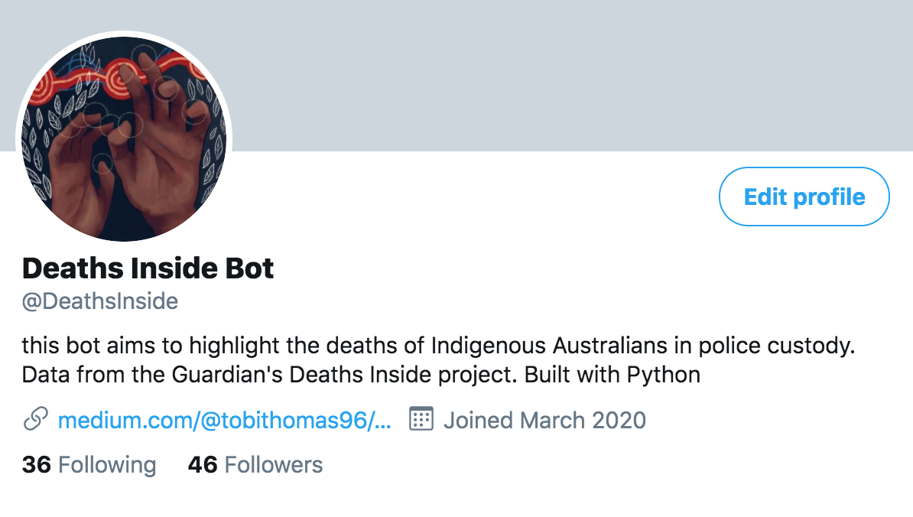

I used R Studio to scrape tweets which mentioned 'Grenfell' over a week in May.
This resulted in 2236 tweets. From then, I used the rtweet and ggplot2 packages to analyse the data. Use the buttons below to flick through the graphs to find out more.
Visit my Github for more information on the front-end and back-end design..
By using Python, I created a Twitter bot which tweets information from the database, with the aim of highlighting and raising awareness of the issue.
CLICK HERE TO VIEW THE BOT > 